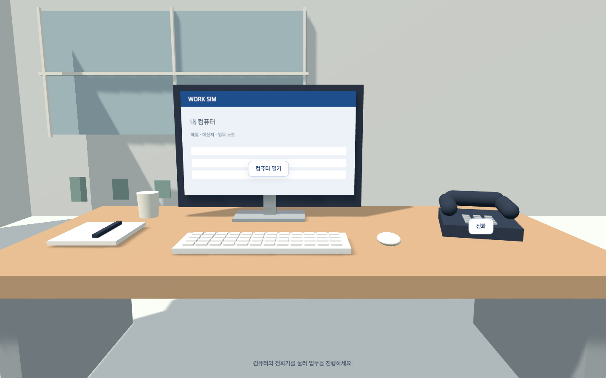

컴퓨터에서 확인
익숙한 바탕화면에서 메일·메신저·업무 노트를 엽니다. 요청을 읽고 필요한 내용을 정리하세요.

익숙한 바탕화면에서 메일·메신저·업무 노트를 엽니다. 요청을 읽고 필요한 내용을 정리하세요.
담당자를 찾아 질문하고 전달합니다. 필요한 보고와 팀장의 안내도 자리에서 전화로 주고받습니다.
답장을 보내고 회고를 작성합니다. 팀장과 마감 통화를 마치면 업무 기록과 결과 PDF를 받습니다.
사은품 누락, 배송지 변경, 반품과 세금계산서 문의까지. 누구에게 묻고 무엇을 안내할지 직접 선택합니다.